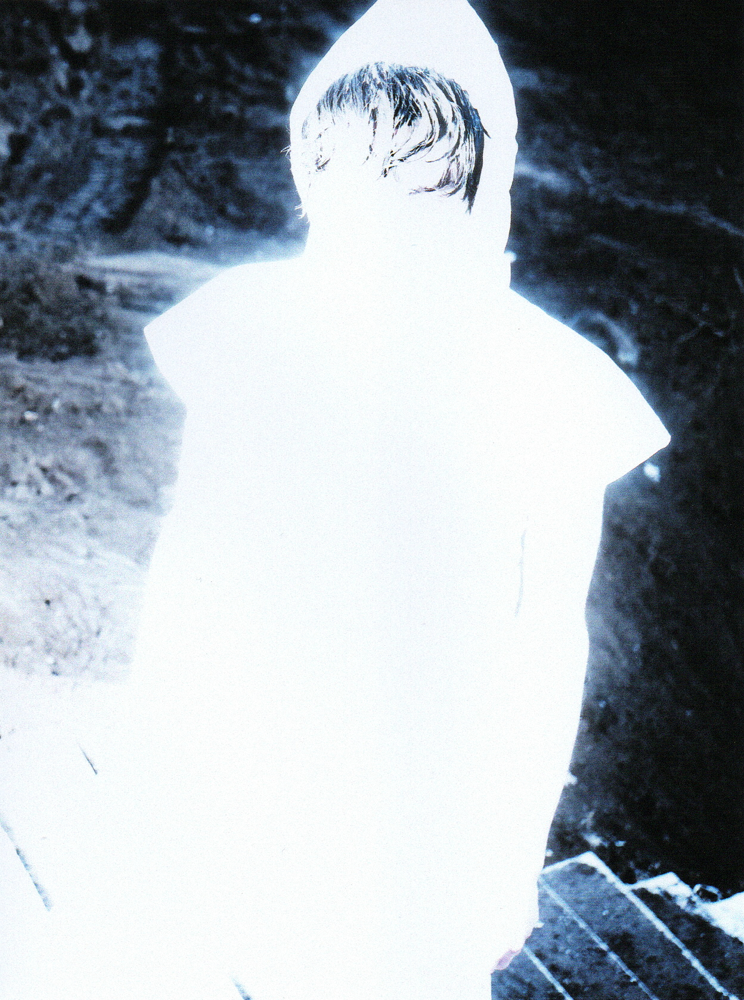

SARAMALACARA

20S



"La fotografía no es ver.
Es sentir lo que otros ignoran."
Mi proceso es destructivo. Elimino el color, elimino el contexto, elimino la comodidad. Lo que queda es la cruda realidad de la forma y la luz.